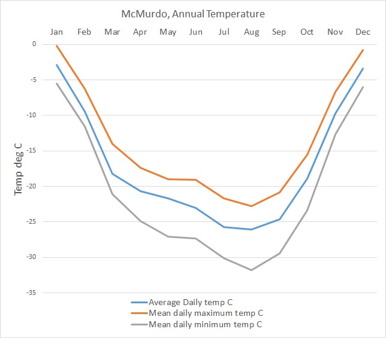

Visualização de Dados 2017.1 Lista de Exercícios 1
Informações Gerais
O objetivo desta lista é praticar os conceitos vistos em sala e construir uma base de código que será possivelmente útil para o projeto da disciplina.
É recomendada a leitura dos capítulos 3 a 8 do livro Interactive Data Visualization for the Web e também o uso da documentação da Mozilla Developer Network.
Data de Entrega
A entrega deverá ser feita via GitHub até 27/08/2016 até 23:59. Veja as instruções para entrega
aqui.
Problema 1
Crie um arquivo chamado problema1.html. Neste arquivo crive um elemento svg que replica cada uma das figuras abaixo (note que não é necessário obter uma figura exatamente igual):
OBS: Para esse exercício não é necessário o uso de D3 (mas pode ser usado caso desejado).
Problema 2
Para a solução deste problema, crie um arquivo
problema2.html e outro chamado
problema2.js. Neste problema, incrementaremos o gráfico de dispersão (
scatter plot) que implementamos nas aulas 3 e 4.
O objetivo é criar um gráfico de dispersão plote dados dinâmicos. Para tanto, crie uma página html que contém o gráfico de dispersão e um botão. Cada vez que o botão for clicado,
um número aleatório N (entre 10 e 50, por exemplo) deve ser gerado para representar o tamanho do dataset a ser visualizado. Deve-se então gerar N pontos com 4 coordenadas (x,y,z,w), todas entre 0 e 100.
As coordenadas x e y devem ser usadas para posicionar os pontos no scatter plot, enquanto que a coordenada z deve ser mapeada para o raio dos círculos e a coordenada w deve ser mapeada através de cores nos pontos seguindo uma escala de cinza para azul. O gráfico deve conter eixos, como visto em sala. O número N deve ser mostrado na página html.
Problema 3
Para a solução deste problema, crie um arquivo
problema3.html e outro chamado
problema3.js. Neste problema, o nosso objetivo é criar uma função que gera visualizações de séries temporais.
Como dataset de teste, usaremos os dados climáticos da cidade de São Paulo contidos na
wikipedia, na seção
Climate.
Crie um gráfico que mostre a evolução da temperatura mínima média, temperatura média e temperatura máxima (todas em graus celsius). A temperatura mínima dever ser visualizada como uma linha azul, a média como uma linha preta e a máxima como uma linha vermelha. O eixo X deve usar uma escala de tempo que mostra os meses do ano, como nos dados.
O gráfico deve se assemelhar ao gráfico abaixo:
